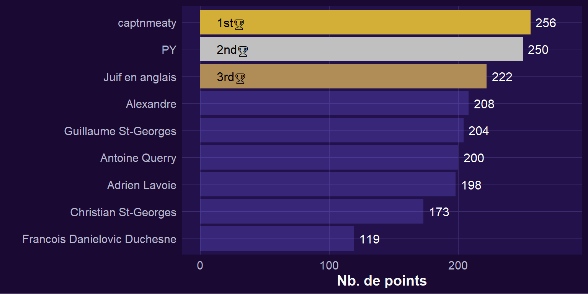
Le prix du meilleur pointeur
Note
C’est les points comme sur Music League.
Prix du meilleur au classement
Note
La moyenne de tout vos classements à travers toutes les rondes.
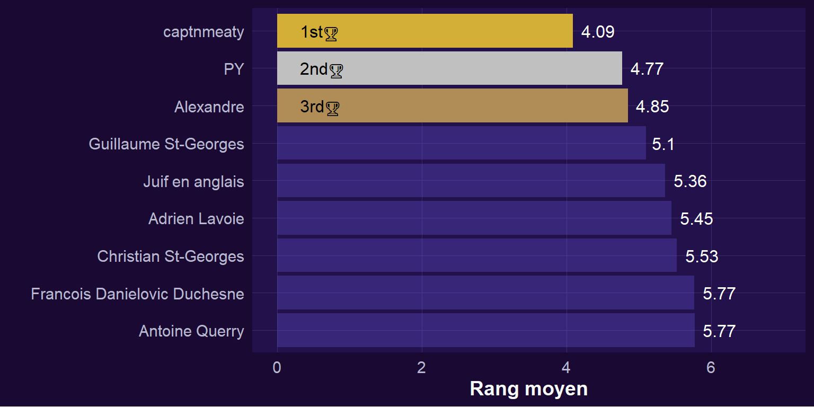
Prix de la pute qui gagne tout le temps
Note
Le nombre de première place cumulées.
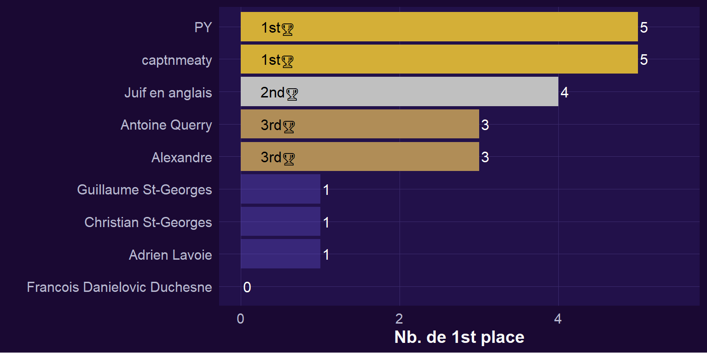
Prix l’hurluberlu qui écrit tout le temps
Note
Le nombre moyen de caractères tapés au moment de voter pour les chansons des autres.
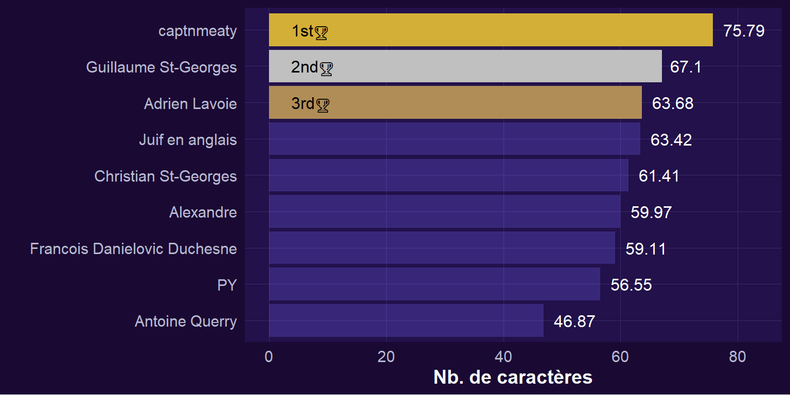
Prix du poète qui tente d’inspirer le vote
Note
Le nombre moyen de caractères tapés lorsqu’il est temps de soumettre sa propre chanson.
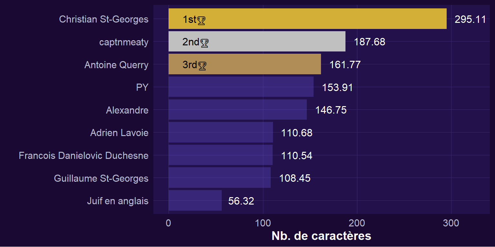
Prix choix du public
Note
Le nombre moyen de personnes distinctes qui votent pour ta chanson.
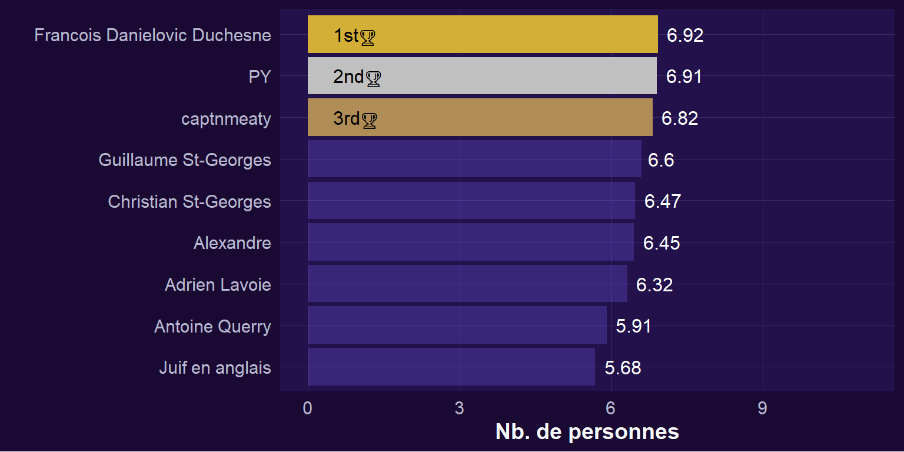
Prix du plus généreux
Note
Le nombre moyen de points maximum attribués à une soumission, par ronde.
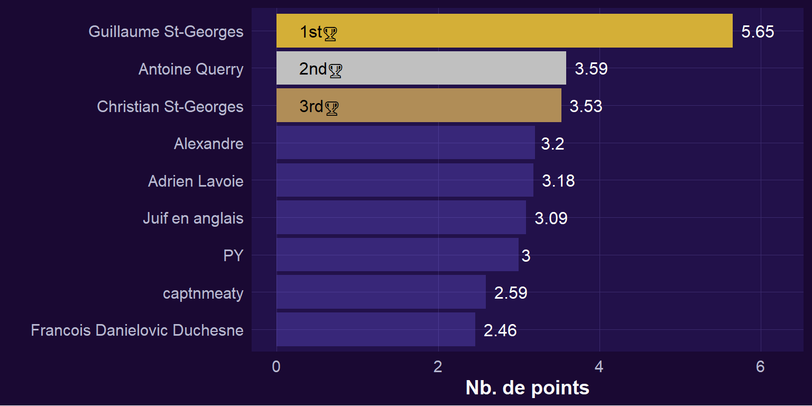
Prix citron
Note
Le nombre de dernière place cumulées.
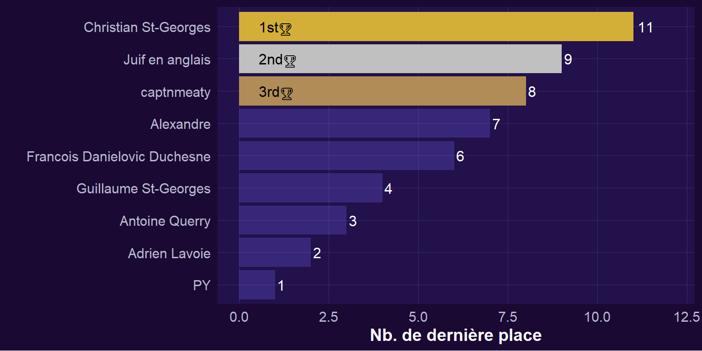
Prix contre le meta (contre-sens)
Note
Corrélation entre le score attribué et la moyenne du groupe (excluant le score attribué). Si une personne donne un score plus bas que la moyenne du groupe (excluant son prope score), cela signifie qu’elle est à contre-sens du groupe (corrélation négative)
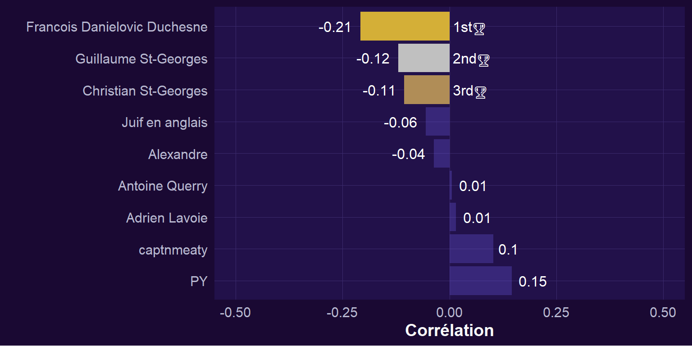
Prix mi-figue mi-raisin
Note
L’indice mi-figue mi-raisin est calculé à partir de la moyenne et de l’écart-type des points obtenus. Plus la moyenne est élevée, plus la personne est aimée. Plus l’écart-type est élevé, plus le score de la personne varie d’une ronde à l’autre, ce qui signifie qu’elle est parfois plus aimée et parfois moins aimée. Les deux indicateurs sont ensuite multipliés pour créer l’indice.
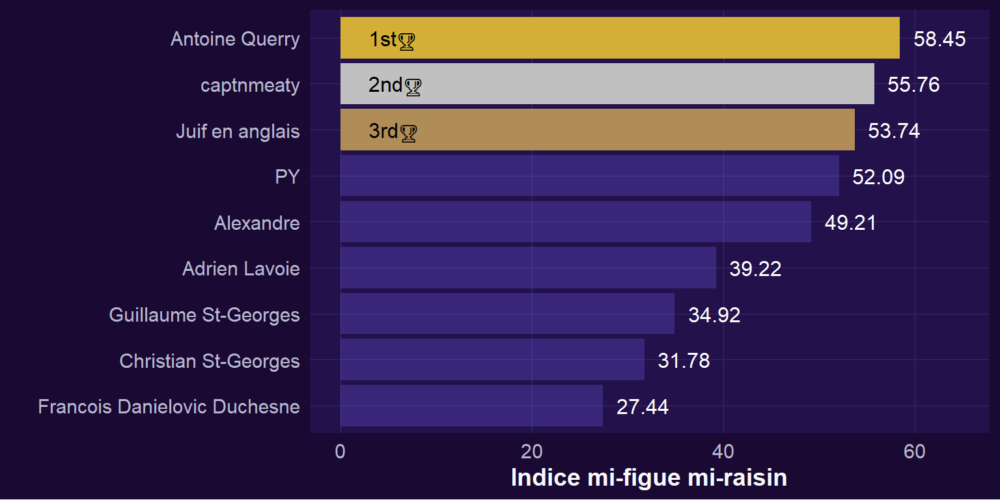
Prix commencer en mouton finir en lion
Note
La moyenne du changement d’une ronde à l’autre. Un changement positif indique qu’à chaque nouvelle ronde, le nombre de points obtenus est plus élevé que lors de la ronde précédente, et inversement pour un changement négatif.
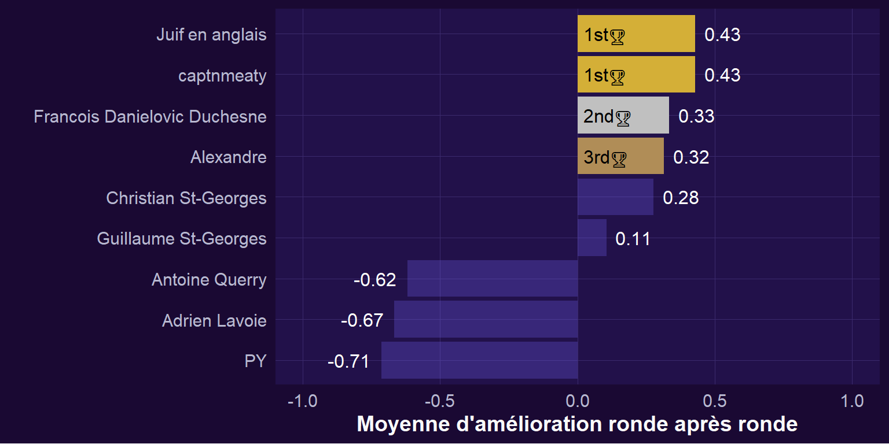
Prix “Let him cook”
Note
Le coefficient de pente linéaire d’une ronde à l’autre. Un coefficient positif indique que la personne suit une tendance à la hausse depuis le début de la ligue, et inversement pour un coefficient négatif (cette personne est en déclin, il coule).
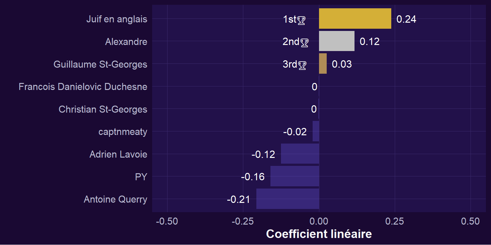
Prix “The Wrath of Guillaume”
Note
Le nombre total de points que Guillaume t’a attribués dans TOUTES LES RONDES.
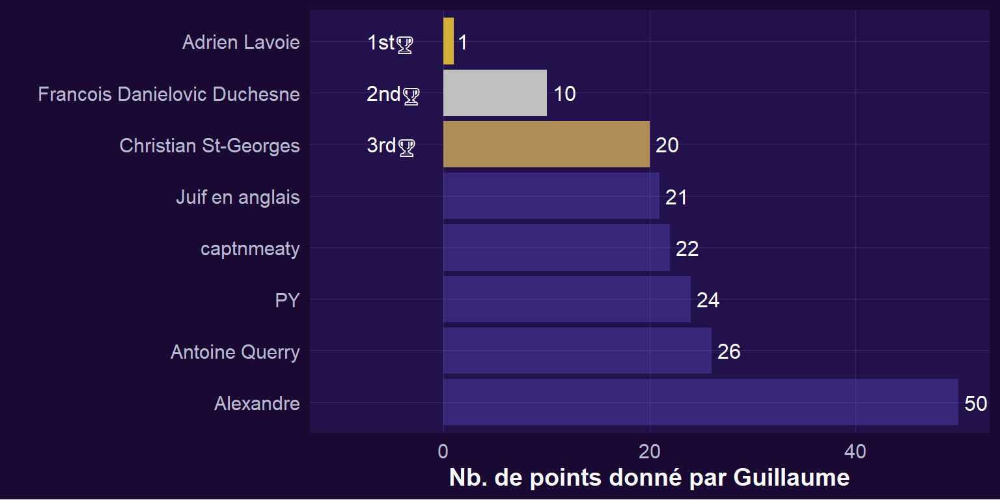